Daily procedures for getting PCT benefits from an approved payroll to the households' bank and mobile-money accounts. The module checks every payment account with GePG, audits the payments of a payment window, builds the Bank and MNO batches (paylists), takes them through two approvals and sends them to MUSE, and follows each payment until it is paid or returned. Server set-up (GovESB keys, scheduled jobs) is covered in the administrator guide.
1. Purpose, Roles, and Access
The Payment module starts where Payroll ends: a payroll calculated by the PCT rule and approved for payment. It ends when MUSE reports every payment as paid or unapplied.
Typical user roles
| Role | Typical work |
|---|---|
| Verification officer | Send payment accounts to GePG, follow the requests, review name checks. |
| Pre-audit officer | Choose the payment window, run the account checks, review compliance and duplicates. |
| Paylist officer | Generate the Bank and MNO batches from an approved payroll. |
| Approvers (e.g. Director of Finance, Executive Director) | Give the two approvals each paylist needs. |
| Finance officer | Submit approved paylists to MUSE; follow unapplied payments. |
| Settings maker / checker | Propose and approve MUSE, GePG, FSP and charge changes. The checker must be a different person. |
| Auditor / M&E (read-only) | Dashboard and reports. |
Access & permissions
Each tab appears only for users holding its right. If a tab or button is missing, ask the system administrator to review your role; do not use another person's account.
| Right | Grants |
|---|---|
270001 | See payment accounts: the Verification tab. |
270101 | Send accounts to GePG for verification. |
270102 | Confirm or reject name checks (Needs review). |
270202 / 270201 | See the Pre-Audit tab / run pre-audit. |
270302 | The Disbursement tab: generate paylists. |
270301 / 270303 / 270304 | See paylists / approve a paylist / submit a paylist to MUSE. |
270401 | The Unapplied Payments tab. |
270501 | The Dashboard tab. |
270701 / 270702 | See the Charges tab / propose FSP names and charge bands. |
270801 | The Reports tab. |
270901 / 270902 / 270903 | See Integrations / propose a settings change / approve one. |
2. Navigation and the Payment Pipeline
Open Payments → TASAF Payments in the left menu. Everything in this manual is a tab of that one page:
| Tab | Used for |
|---|---|
| Dashboard | Counts of accounts and paylists at each stage. |
| Verification | Checking payment accounts with GePG. |
| Pre-Audit | Checking a payment window before money moves. |
| Disbursement | Generating the Bank and MNO batches from a payroll. |
| Paylists | Approving and submitting batches; following MUSE's replies. |
| Unapplied Payments | Payments the bank or operator could not credit. |
| Charges | Banks and mobile operators (FSPs), their names and withdrawal charges. |
| Reports | Summary of e-payment by FSP, with drill-down. |
| Integrations | MUSE and GePG settings, and the changes awaiting approval. |

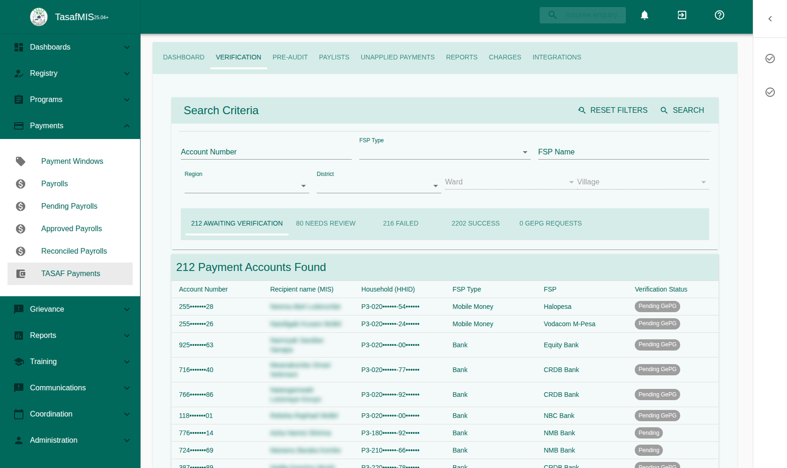
The pipeline
- Verify accounts. Each household's primary account is checked with GePG, which returns the name the bank or operator holds. The system compares it with the household's recipient.
- Review name checks that are not a clear match.
- Pre-audit the payment window: account checks, amounts per household, duplicates.
- Generate the Bank and MNO paylists from the approved payroll.
- Approve each paylist twice, by two different people.
- Submit to MUSE. MUSE's replies update the paylist and each payment automatically.
- Follow up unapplied payments through Case Management.
3. Verify Payment Accounts (GePG)
A payment account can only be paid once it is Verified. The Verification tab has five lists:
| List | Shows |
|---|---|
| Awaiting verification | Accounts not yet checked, or sent and waiting for GePG (Pending GePG). |
| Success | Verified accounts. Accounts due their check before the first payment are marked Re-verify due. |
| Failed | Accounts GePG or a reviewer rejected. They are fixed in Case Management → Account Corrections. |
| Needs review | Accounts whose returned name does not clearly match (section 4). |
| GePG requests | Every request sent to GePG, with its answer. |
Send accounts
- Open Awaiting verification and filter by location, FSP or account type.
- Tick accounts and press Verify, or press Verify all matching (N) to send every account that matches the filters, on every page.
- Confirm. A summary shows what was sent, refused, skipped, or withdrawn because the number is invalid or belongs to another operator.
- Results arrive when GePG answers. You get a notification for each request; the accounts move to Success, Failed or Needs review.

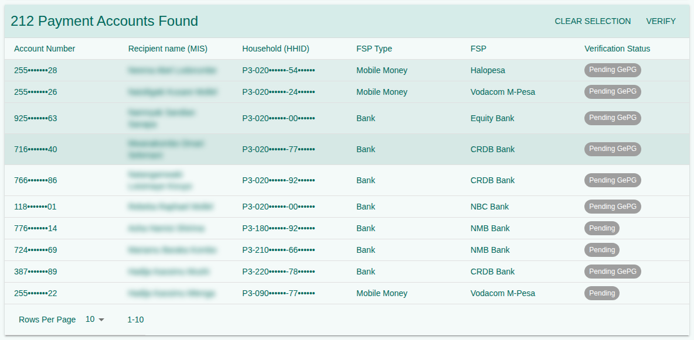
Show payload
Show payload (⋮ menu) shows exactly what Verify all matching would send for the current filters. Nothing is sent and no account changes.
Re-verify before the first payment
Every account is checked once more just before it is first paid. On Success, use Re-verify before payment (ticked rows) or Re-verify all due. Until GePG answers, the account cannot pass pre-audit.
GePG requests
Each row is one request to one FSP, with its accounts and results (verified, to review, failed). An account in a request is Pending GePG and cannot be sent again. If GePG never answers, press Release: the accounts go back to Awaiting verification. A late answer is still applied.
4. Review Name Checks
When the name returned by the bank or operator does not clearly match the household's recipient, the account goes to Needs review. Open it to see the recipient name in the MIS, the name returned, the match score and the reason (e.g. Surname differs, Name of another household member), plus earlier attempts.
- Compare the names with supporting documents if needed.
- Press Confirm match: the account becomes Verified and goes on to pre-audit and payment.
- Or press Reject: it becomes Failed and goes to Case Management → Account Corrections.
- Add a note on why; it is kept in the audit trail.

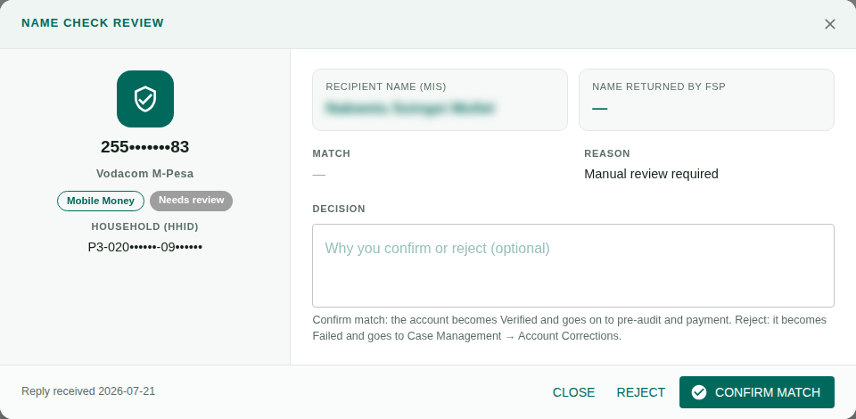
5. Pre-audit a Payment Window
At the top of Pre-Audit, choose the payment window (the payment cycle, e.g. Sep – Oct 2026). Every tab looks at all payrolls of that window except rejected ones.
5.1 Overview
Cards for Total MNOs, Total Banks and Total, each with the amount, households and payments. A note below counts payments whose household has no primary payment account. To look at one household, type its HHID (or part of it) and press Open household.

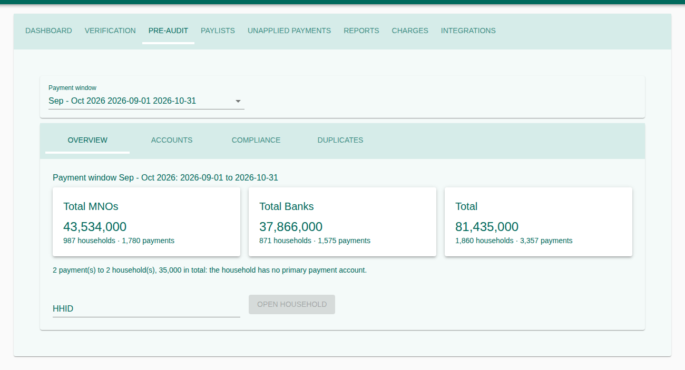
5.2 Accounts: run the account checks
Only accounts that Passed are paid. Tick accounts (or all) and press Run Pre-Audit.
| Check | If it fails |
|---|---|
| Account is verified | Verify it first (section 3). |
| It is the household's primary account | Only primary accounts are paid. |
| Linked to a household that is active in the benefit plan | The household is missing or suspended. |
| Mobile number is valid (255 + 9 digits, starting 6 or 7) | Correct it in Case Management → Account Corrections. |
| Re-verified before the first payment | Use Re-verify on the Success list. |
5.3 Compliance: is each household paid the right amount?
Every payment is recalculated from the household details saved when the payroll was calculated:
| Part | Rule |
|---|---|
| Base | 14,000 |
| Disability | 5,000 once per household |
| Health | 7,000 per child aged 0–5, at most 3 |
| Primary | 5,000 per primary student, at most 3 |
| Secondary | 8,000 per secondary student, at most 3 |
| Household cap | 50,000 in total, then penalties are deducted |
Four cards count Match, Overpaid, Underpaid and Data error (a payment that cannot be checked). A table shows each part for the whole window; below it, the payments that do not match, with the expected and paid amounts and the part that differs. Recalculate refreshes the figures; Export downloads every payment part by part (CSV).

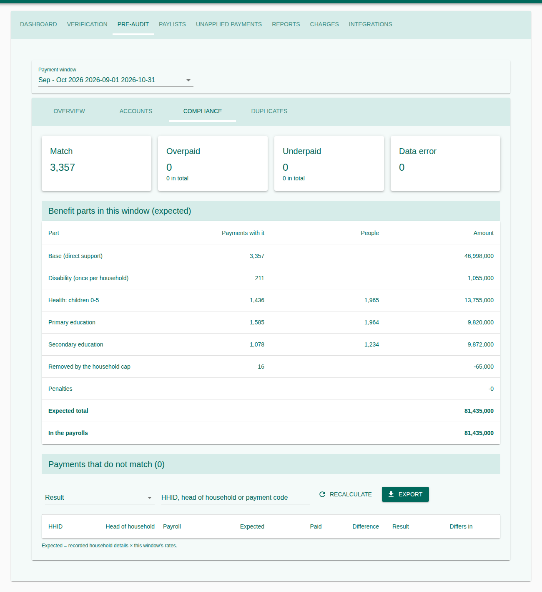
5.4 Duplicates: is anyone paid twice?
| Card | Finds |
|---|---|
| Household paid more than once | The same HHID with more than one payment in the window, with the extra cost. |
| Account shared by households | The same account number on different households (0744… and 255744… are treated as the same). |
| Same person in two households | A member with the same names and date of birth in two paid households. |
Click a match to see its payments, and an HHID to open the household.
5.5 The household view
Shows the head, village, payment account and its status; the Findings in plain sentences; one table per payment with Recorded (saved at calculation), Expected (the rule applied to it) and Today (the rule applied to the members now, changed parts in red); the members; and every payment of the household in all windows.

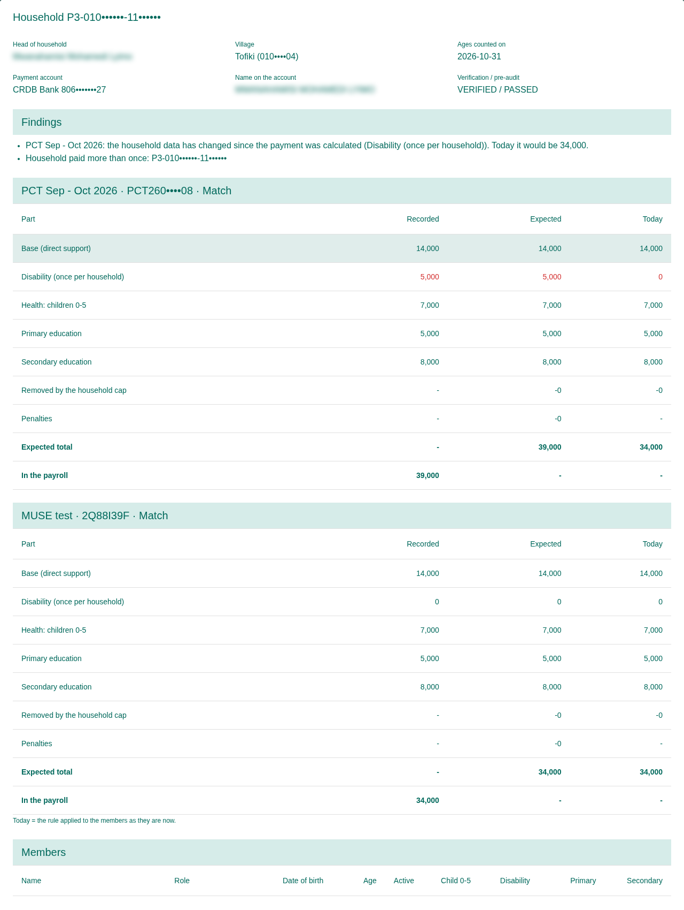
6. Generate a Disbursement Batch
A paylist is one batch sent to MUSE, either Bank or MNO, never both; one payroll normally gives two. Very large batches are split into parts of at most 50,000 payments. A benefit is paid from one paylist only.
- Select Payroll: only payrolls approved for payment are listed.
- Batch Type & Scope: Bank or MNO, and the destination.
- Review: what the batch will hold. Nothing is created yet.
- Generate: creates the paylist(s) as Pending Approval. Nothing is sent.

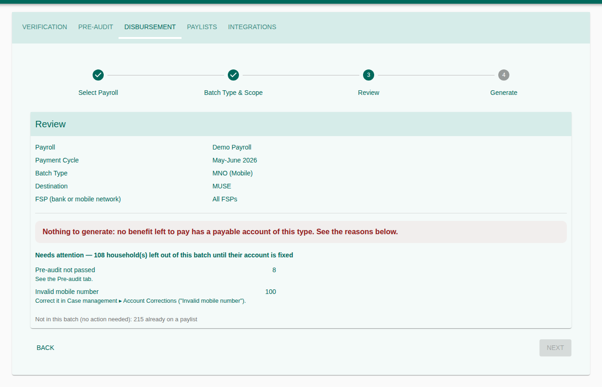
Reading the Review step
| Section | Meaning |
|---|---|
| Will be included (green) | Payments and amount, by FSP. |
| Warnings (amber) | The batch can be generated but will run into trouble: an FSP without MUSE details (Submit will be refused), or no withdrawal-charge band for an amount (the household would get less). Fix them on the Charges tab first. |
| Needs attention | Households left out, and where to fix them: account not verified, pre-audit not passed, invalid mobile number, no primary account. |
| Not in this batch (grey) | Paid through the other channel, or already on a paylist. No action needed. |
7. Approve and Submit Paylists
On Paylists, double-click a paylist to open it. The header shows the batch type, status, MUSE batch reference and MUSE's last reply; the summary shows the gross amount sent to MUSE, the net amount to households and the withdrawal charges.

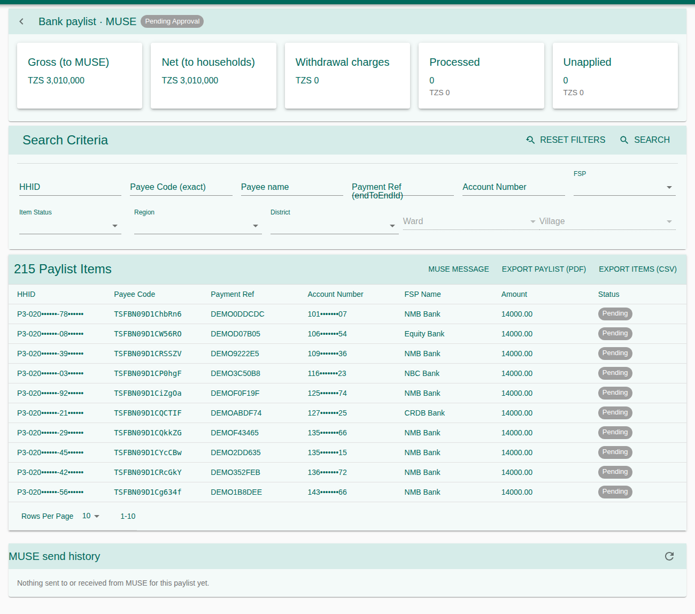
- Approve Paylist, twice, by two different people. After the first approval it stays Pending Approval; after the second it is Approved. Approvals can also be given from the Tasks inbox.
- Press MUSE message to see the exact message and anything MUSE would reject in it. Nothing is sent. Fix every listed problem.
- Press Submit to MUSE and confirm. The paylist becomes Submitted to MUSE only once it has really been sent.
- MUSE's replies move it to Received, Accepted and Sent to bank / MNO, and mark each payment paid or unapplied. When every payment has an outcome the paylist is Closed.
Rejected at approval is final: its households are released for a new batch. Rejected by MUSE can be fixed and submitted again. Export Paylist (PDF) and Export items (CSV) download the batch.
8. Unapplied Payments
A payment the bank or operator could not credit (wrong or closed account, name mismatch, returned by the bank) is listed here with MUSE's reason code and description. These records come from MUSE and cannot be edited.
- Open the payment and find its account.
- Correct the account in Case Management → Account Corrections; it is then verified again.
- The household is paid in a later batch once the account passes again.

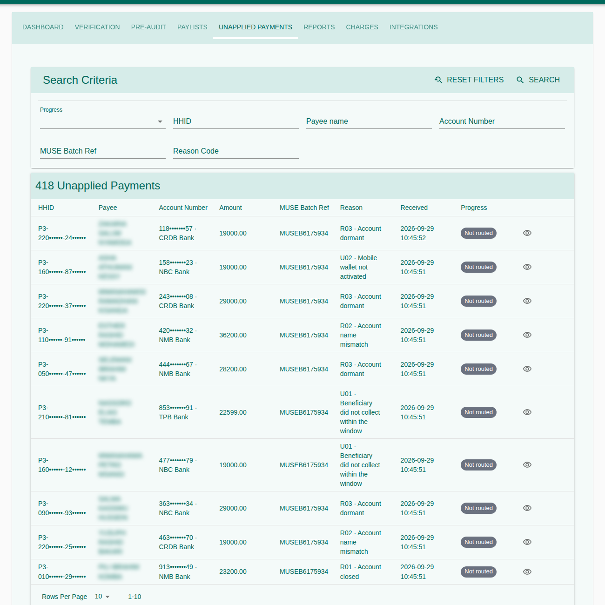
9. Payment Dashboard
Verification Status counts accounts that are Pending, Awaiting GePG, Verified, in Manual Review and Failed. Paylist Status has five cards with count and amount: Pending Approval, Approved, With MUSE, Rejected by MUSE and Closed. Click a card to open the list behind it.

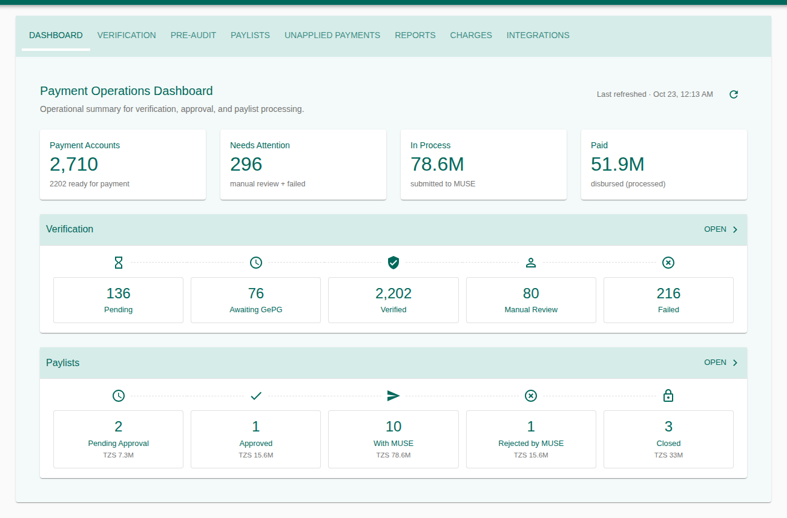
10. Charges: FSPs and Withdrawal Charges
Each household is paid its benefit plus the withdrawal charge of its bank or operator, so it can withdraw the full entitlement. The Charges tab lists every bank and mobile operator (FSP).
| Status | Meaning |
|---|---|
| Ready | Nothing blocks payments to this FSP. |
| No charge bands | Payments to its accounts are refused at generation. |
| No band for 19,001–19,999 | A gap: a payment in that range is refused. |
| MUSE details missing | A bank without bank name or BIC: Submit to MUSE is refused. |
| Awaiting MUSE | A mobile operator without a BIC from MUSE yet. |
| Awaiting approval | A change to it waits for a second person. |
| No accounts | No payment account uses it. |
Tick Only FSPs that need attention to hide the rest.

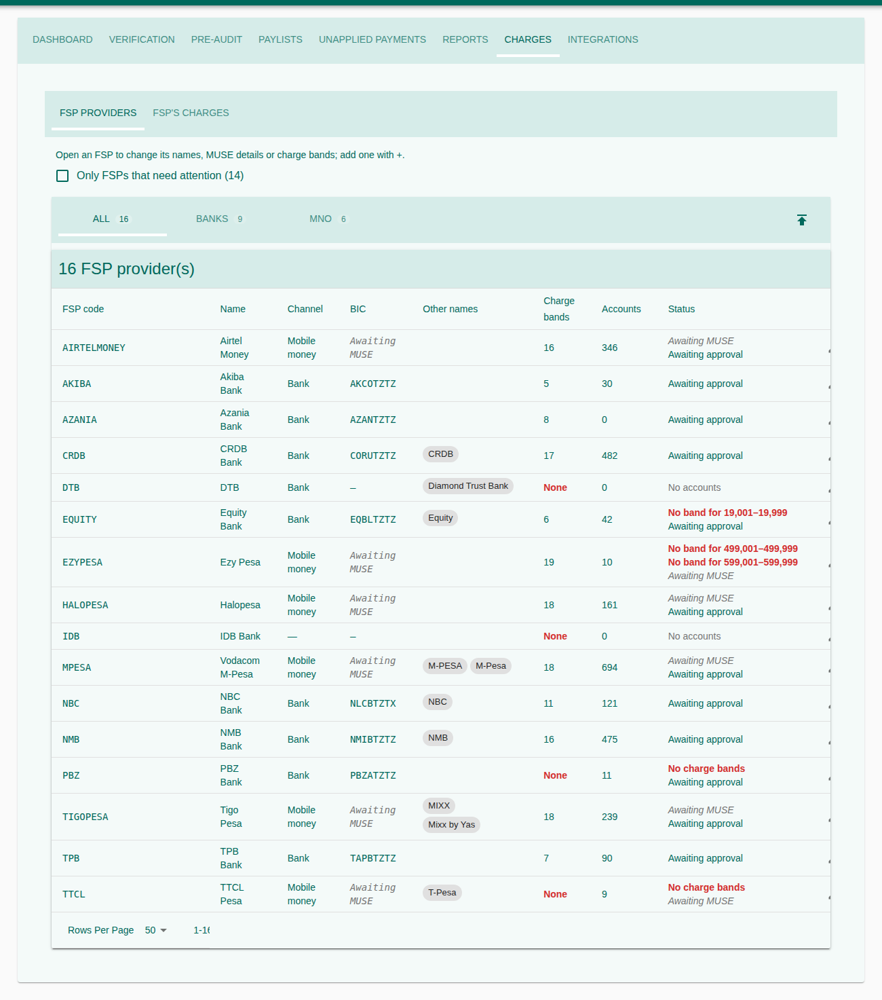
Edit an FSP
Click a row (or ✎) to open it:
- Details: code, name, channel, MUSE bank name, BIC; for operators, the mobile prefixes (e.g. 068, 069, 078).
- Other names: other spellings found on accounts (e.g. "M-Pesa", "Vodacom M-Pesa"), all treated as this FSP.
- Charge bands: the charge for each amount range. A gap between bands is shown in red as you edit.

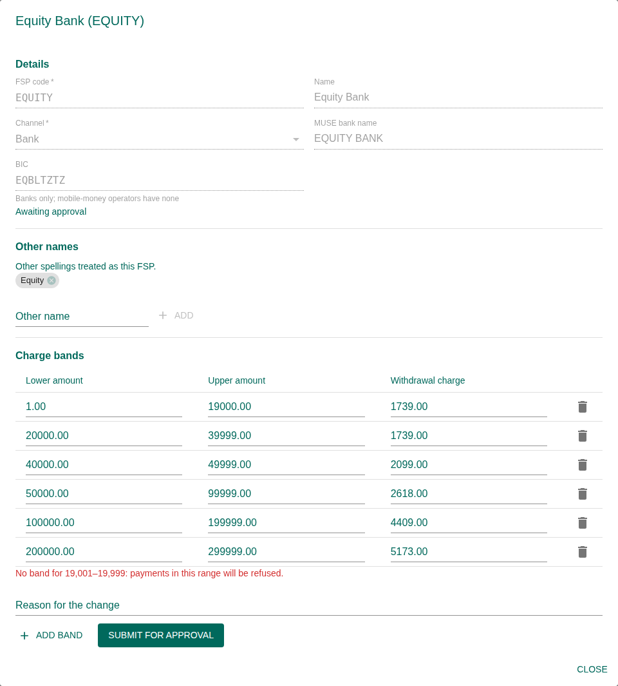
- Make the change, add a reason, and press Submit for approval.
- The FSP shows Awaiting approval and cannot be changed again until the change is decided.
- A second person approves it under Integrations → MUSE → Changes; only then does it apply.
Import charge bands (CSV)
The ⬆ icon imports a file with columns EPAYMENT_CODE, LOWER_AMOUNT, UPPER_AMOUNT, WITHDRAWAL
(Download template gives an example). Choose Add to current bands or Replace
the bands of these FSPs; FSPs not in the file are never touched. Each FSP in the file becomes one
change awaiting approval. A file with any bad row, or with overlapping bands, is refused as a whole.
11. Reports
Summary of e-Payment by FSP: one row per FSP with households, withdrawal charges, the PCT benefit parts and the total paid. Only payments the gateway has confirmed are counted. Benefit parts are before the household cap, so they can add up to more than was paid.
- Select an FSP to see the payments behind its row; Include unpaid adds returned and pending ones.
- Select a beneficiary to see the benefit breakdown and every payment ever attempted.
- Download exports the summary as CSV with a totals row.

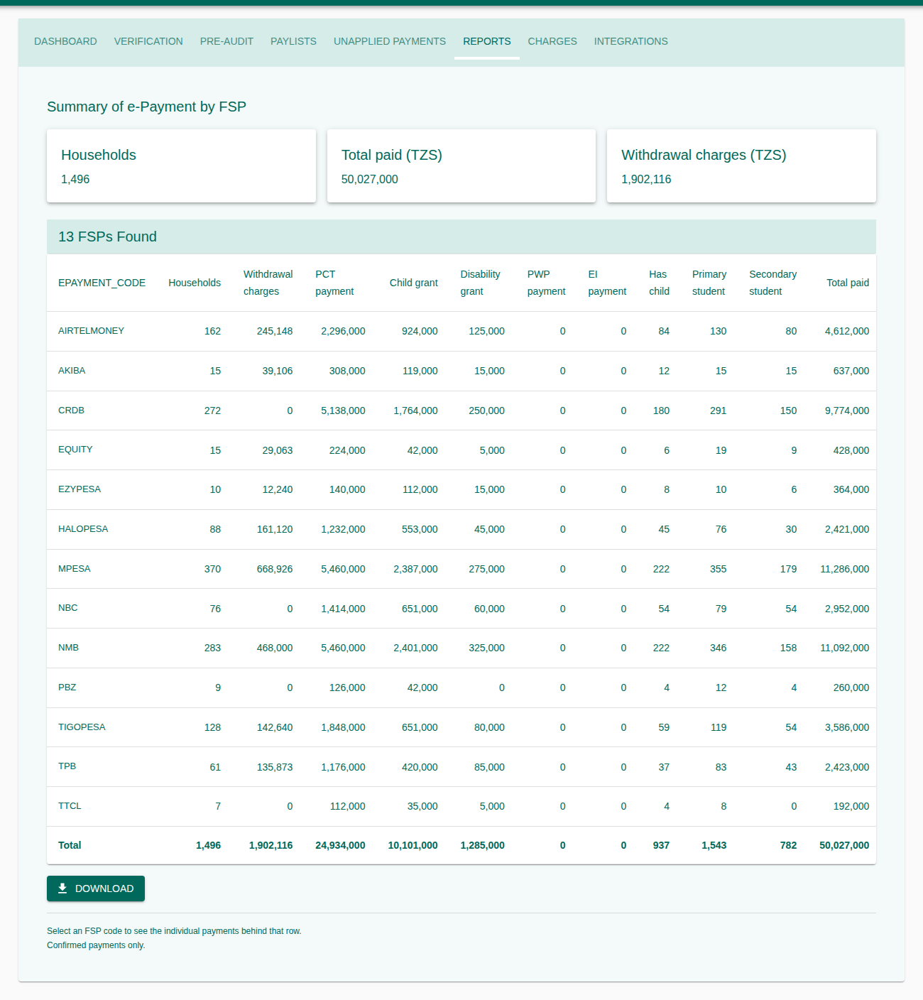
12. Integrations: MUSE and GePG
MUSE
The institution code, payer account, sub-budget classes, payment description, straight-through processing and GL accounts used in every message to MUSE. Below them, Changes lists every proposed change (MUSE settings, FSP details, other names, charges) with what changes from what to what. For charge bands, only the bands that differ are shown: removed ones struck through, then the new ones.
- The maker edits, gives a reason and presses Submit for approval.
- A checker presses Approve or Reject (with a comment). The maker can Cancel request.

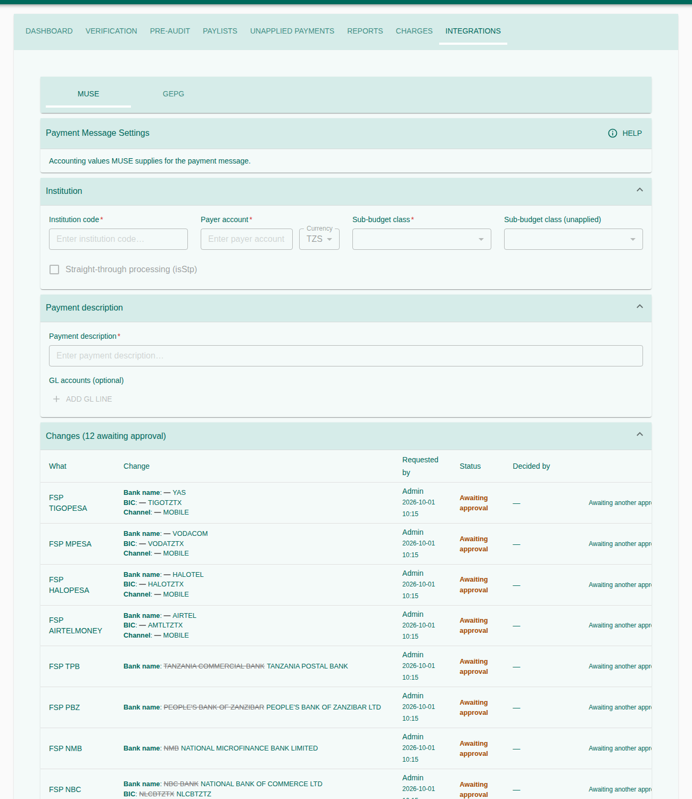
GePG
TASAF's SP code, SP system ID and Service code at GePG, all supplied by GePG, changed with the same two-person rule. Warnings at the top appear only when something needs fixing (GovESB not configured, no API code yet, settings approved on another server, providers skipped because they have no BIC). Verification requests is the same list as Verification → GePG requests.
13. Status Reference
Payment account verification
| Status | Meaning | Next |
|---|---|---|
| Pending | Not yet checked | Verify |
| Awaiting GePG | Sent, no answer yet | Wait, or Release the request |
| Verified | Name confirmed | Pre-audit |
| Manual Review | Name not clearly matching | Confirm match or Reject |
| Failed | Rejected | Case Management → Account Corrections |
Pre-audit
| Status | Meaning |
|---|---|
| Pending | Not yet run |
| Passed | All checks passed; can be paid |
| Failed | A check failed; the reason is shown on the account |
Paylist
| Status | Meaning |
|---|---|
| Pending Approval | Waiting for two approvals by two different people |
| Approved | Ready to submit |
| Submitted to MUSE | Sent; no reply yet |
| Received by MUSE | MUSE accepted the message |
| Accepted by MUSE | MUSE created the batch |
| Sent to bank / MNO | Passed to the banks and operators |
| Rejected by MUSE | Fix and submit again |
| Closed | Every payment has an outcome |
| Rejected at approval | Final; its households are released |
Payment (paylist item)
| Status | Meaning |
|---|---|
| Pending | In a paylist, no outcome yet |
| Processed | Paid |
| Unapplied | Could not be credited; see Unapplied Payments |
14. Troubleshooting and Good Practice
| Problem | What to do |
|---|---|
| My payroll is not in Select Payroll | Only payrolls approved for payment are listed. Have it approved first. |
| A paylist has fewer households than expected | Read Needs attention on the Review step: the accounts are not verified, not pre-audited, have invalid numbers, or there is no primary account. |
| An account cannot be sent again | It is waiting for GePG. Release its request on GePG requests. |
| No answer from GePG after a day | Release the request and send again; tell the administrator if it repeats. |
| Submit to MUSE is refused | Open MUSE message and fix what it lists; check the FSP's status on Charges. |
| A change I made is not applied | It waits for a second person under Integrations → MUSE → Changes. |
| I cannot approve my own change | By design; another approver must decide it. |
15. Glossary
| Term | Meaning |
|---|---|
| FSP | Financial service provider: a bank or mobile-money operator (MNO). |
| GePG / GovESB | Government payment gateway, reached through the Government Enterprise Service Bus; used to check accounts. |
| MUSE | The government accounting system that pays the batches. |
| Payment window | A payment cycle, e.g. Sep – Oct 2026. |
| Paylist | One Bank or MNO batch sent to MUSE. |
| Withdrawal charge | The fee an FSP takes to withdraw; added on top of the benefit. |
| Charge band | An amount range and its withdrawal charge. |
| BIC | Bank identifier code MUSE uses to route a payment. |
| Unapplied | A payment the FSP could not credit. |
| HHID | Household identifier, e.g. P3-010501204-11281575. |